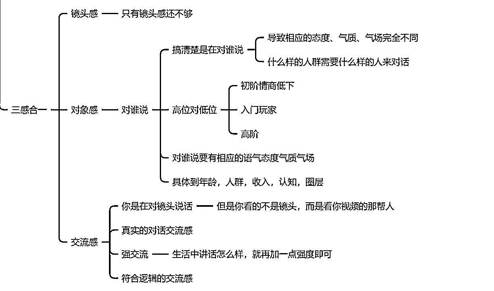

来源：https://ye9tqux6d9.feishu.cn/docx/KDQWdM096o95XyxPu6fcf7tNnGb
感谢生财，一路陪伴。
hello，大家好，我是妍子。
主攻个人IP搭建+内容输出+私域转化闭环体系。
一年半时间因生财而蜕变，从一名996大厂员工到现在的社群主理人。
在大健康行业运营两个500人社群，一个月时间转化220万，转化率36%。
大家好我是妍子，上一篇文章获得了精华，感谢亦仁老大的认可，也应该有很多圈友在上一篇文章已经认识我了。上一篇文章主要是想给大家讲一讲我作为一个什么都没有的普通人，如何走出自己的路并拿到结果。通过我自己这一路上的所有经历，我想告诉大家，不要迷茫也不需要焦虑，更不能浮躁。我们踏踏实实的从0开始，清楚的知道自己想要什么，在这一路上不断地积累属于自己的核心技能，这就是作为普通人，能够走出来，能拿到自己想要的结果的唯一方式。
在上一篇文章发布后，有很多圈友明白了自己在这条路上当下应该做些什么，应该怎样才能走出来拿到结果（没有看过的圈友们可以点击我的主页看我之前的文章哈）。在看完“怎么拿到结果”这种道的层面的内容后，有很多圈友对于我现在的IP、口播、私域运营这几个版块很感兴趣，那么今天我就来和圈友们来聊一聊这种具体的“术”，希望我的经验能够帮助到更多的圈友，能让圈友们可以“拿过来直接用”。
今天就先来和大家聊一聊市面上从没有人和你讲过的点，也是绝大多数人的口播为啥做不起来的根本原因：人设+内容+口播的体系，虽然说最主要的术是在口播版块，但是口播的一切全部都是依附于个人IP的，这点尤为重要！！给大家在这里画好重点。离开这一个体系，口播就是一个不成立的伪命题，所以当然做不起来。
很多人会想“妍子口播我做不了呀太难啦！我更想学私域运营呀！我更想学直播呀！”其实我想和大家讲的是：口播真的一点都不难。在下面大家看到我的第一条口播视频就会发现，可能我最开始的口播水平远远不如大多数的圈友。但是，到第一条被专业的演说老师都夸赞的视频，我只用了半个月，而另外一个我带过的女孩子，她的身体很僵硬动作都很僵硬，对于口播来讲就是地狱难度了，但是最后做出优质的口播内容也只用了一个月的时间。其实口播想要练，真的很容易。只要你找对了方法，练出来好的口播，真的很容易。绝大多数圈友觉得口播难，就是因为没有对的方法来练习，所以会越练越迷茫，到最后只能放弃。所以在这里先给圈友们树立起信心，口播是很容易能够练出来并且可以很快拿到结果的。
另外我想和圈友们说的一点是：口播是当下对于普通人而言，最值得积累、最值得学习、投产比最高的。并且，口播是可以作为最核心的技术，可以应用于90%的事情上，如果你能把一个人设+内容+口播的体系掌握，你就会发现绝大部分的项目你都能够看透，且大部分的事情你都能做，就像访谈、直播、私域等等项目，都是需要口播基础的。尤其是自身有专业素养的人，如果能够掌握口播拍出优质的口播视频，那么你就可以很轻而易举的开启属于自己个人IP。就像我们现在招过来的营养师们，每一个人都有专业的技能，但酒香也怕巷子深。哪怕他们再专业，没有一个好的方式把自己的专业传播出去，也没人知道。所以来我这里的人第一件事一定是先学习口播，掌握口播，我们就能多一个IP，每一个IP，都有着一股不容小觑的能量与吸引力。
最后呢，口播是练习成本最低的，没有之一，又是对于普通人而言持续成长进步最大的，同样没有之一。大家可以照着这一篇内容来联系，每天就拿出1~2个小时的时间就足够了，失败也不会有任何的损失呀，但你会发现随着口播练习越来越多，你自身的气场、说话的逻辑都会随之提升，这点是受益无穷的！
那么现在正片开始，我们来深度聊聊口播这件事，聊一聊0基础的素人如何打造千万爆款。
对于口播的认知，我所接触的人大致分为两种观点。第一种也是绝大多数人，他会觉得口播就是我对着镜头说话，我把我自己的东西讲出来、录下来而已，他会觉得口播很简单的，就是把我要说的东西说出来，然后把这个过程录出来就可以了，无非就是去讲给别人听嘛。而另外一种人他会觉得什么？他会觉得口播是我要去“演”，像演员一样，我对着镜头去演一个完全不一样的我，演出一个很厉害的我。但是其实这两种它都不对，而且如果是抱着这两种认知来练习口播，会增加很大的口播难度，甚至很难练的出来。这就是绝大多数人尝试过，但是最后会放弃的原因，也是为什么通过口播能拿到结果的人寥寥无几的根本原因。毕竟起点和方向都不对，怎么可能走到对的终点。
那么真正的对的口播它是什么？
在给大家讲解口播之前，我要先和大家聊一聊其他的事情。有自己尝试过口播的圈友们，你们在第一次拍摄口播视频的时候是不是很难受、浑身不自在、话也说不清楚、大脑一片空白？随后就开始会开始怀疑：是我自己不行，或者是我不适合口播？
其实这是很正常的，不只是你们，包括我，甚至可以说99%的人第一次尝试口播的时候都是这样的。这就是口播对于普通人的第一道门槛。尤其是没有资源，没有经验，没有过往案例的普通人。在后面接触了大健康行业的老板们之后我发现：就连他们想靠自己做个人IP都很难的——因为无论你有任何成就，但在口播这件事上他就是小学生，而且很多老板只是会浅尝辄止，很难拿得出时间来投入练习。所以拍口播来做个人IP对于他们来讲，可就不是洒洒水的事情了。
所以在这里我要给大家提出一个新的观念，一个能够帮助大家彻底掌握口播的观念：口播与讲什么内容无关，只与你自己相关：口播就是找到更好的自己。
大家可以想一想，口播是用来干什么的？一定是将更好的个人IP与自己的内容传递出去，从而吸引到一批人来付费对不对？但是，就我们当下而言，如果直接就以自己的层次来，会不会吸引到人？答案是显而易见的——肯定不会。你可以想一想，如果你有一个问题需要解决，那么你是会找一个看起来和你差不多的普通人，向他付费，还是会找一个各方面看起来都很专业很厉害的人来帮你解决呢？一定是后者吧。对于我们自己而言也是一样的，我们拍口播，如果就随随便便的拍，那么结果也肯定是“随随便便”的。
这时候就会有同学在说：那我可以演呀，我可以把自己包装起来，包装的很有钱很厉害。这点就是大错特错了。在我帮助五十个营养师搭建起来个人IP之后我发现了一个点：不是你的，无论如何也装不出来。这点就是很现实的，很多人会想我没有那我就通过服装、妆容、场景、手表首饰以及语言上的包装就行了，但是现实是很残酷的，包装出来的东西靠我们当下的能力素质，是撑不起来的。这就是为什么有那么多营销号的根本原因了，就是因为他们想走捷径，靠包装来提升自己的专业度，但最后却成了一个笑话。其实这就是口播的大忌讳，太注重表演，非常浮夸。最好的状态应该就是隔着屏幕跟大家聊天的感觉。
所以，我来告诉大家，口播最本质上其实就是找到更好的自己。你不需要有任何的焦虑，你有很多的优点是别人做不到的。我们在做口播的时候，其实就是在挖掘那个更好的、能够吸引一大批的人。即便我们当下没有任何的成绩，或者说我是一个打工人，但我依旧可以做口播。做口播这件事，可以让我们静下心来，真正的找到自己的优点并放大，这是我们变得越来越好的前提。很多人原本就是一个普通的打工人，包括我自己也是一样的，看过我上一篇帖子的圈友都知道，我这条路的起点就是口播，在之前我只是个很普通的996打工人，因为生财让我打开了新世界的大门，然后通过口播不断地找到更好的自己，才促成了后面的不断进步，最后终于拿到结果。
对于每一个圈友也是一样的，找到自己的优点并放大，这是让我们越来越好的起点。因为我们谦逊的传统，很多人就会忽视自己的优点，这是万万不可取的。一旦有这样的想法，就会很难再向前进一步。
所以，对于我们而言，口播就是找到更好的自己，在做或者练习口播的过程里，不断地挖掘自己的优点，不断地让自己看到，更好的自己是什么样子的。找到更好的自己，并大大方方地展示出去，你就一定可以吸引到一大批属于你的忠实追随者。我们的起点不一定要很高，也不需要有太浮夸的表现力。只有一个标准，那就是更好的自己。这就是为什么有那么多的IP是打着“xx学姐”、“xx学长”的名字了，如果你深挖一下，你就会发现他们其实也是普通人，但是，他们比你厉害的点，就在于找到了那个更好的自己。
圈友们如果能够想明白这一点，并且秉持着这样的想法来练习口播，就会发现口播其实没有那么难了，反而自己还会在这条路上找到更好的自己，一步一步的前进，圈友们加油！！
讲完了口播最核心的内容以后，我们就要开始来聊一聊IP、内容以及口播的体系了。同样，这也是决定口播能不能做的起来的关键点。上面所讲的“找到更好的自己”可以理解为内在，内在清晰了以后，那么IP与内容就算得上是外在了。只有内外兼修，才能形成一个完整的闭环，口播这件事，才能成。
到今天为止大家应该都知道什么是个人IP了，很多圈友应该也尝试过或者正在做个人IP。今天我就结合口播来和大家讲一讲个人IP这件事。
为什么我要叫做IP、内容、口播体系呢？就是因为我发现大多数人在做这件事的时候，经常会把这些分割开来。很严格的一就是一，二就是二。所以就会出现一个很常见的现象：口播无论是拍摄过程还是最后的成片，都极度的生硬。那么大家有没有想过，一与二，其实并不是独立的，反而是仅仅贴在一起的呢？一和二挨着，没有一哪来的二，没有二那一怎么再进一步？同样的，大家有没有发现，没有IP，哪来的内容，哪来的口播？没有口播，再好的IP再好的内容怎么传递出去？怎么吸引来喜欢你或是有需求的人？
所以就是这样子的，我发现绝大多数的人在练习口播的时候都不会太注重内容，更不会注重IP。甚至是在发布视频了以后，整个账号上的内容、IP乱的一团糟。这种怎么可能有好的变现结果呢？
在这里面我给大家一个架构，也就是IP、内容、口播的金字塔架构。在这里我明确的告诉大家：IP、内容、口播这三者是缺一不可的，不是说我在练习的时候，随便拿一段文案就能练得出来了。圈友们可以想一想，大家是不是什么都没考虑过，最多也就是知道自己想要做什么，然后就开始盲目的练习口播，最后练的浑身难受，大脑一片空白开口说不出一句话，然后便下了结论：我不适合口播，还是换个方式吧。
为什么会导致这样的状况出现？到这里圈友们还记不记得上面那一点中所讲到的：找到更好的自己。你看，你连自己是谁都不知道（IP），更别提找到更好的自己，那口播怎么可能练的出来？
另外呢，口播最重要的不也就是把更好的自己展现出去嘛，更好的自己，你肯定是要结合你的IP，毕竟什么样的人说什么样的话。而内容就是什么样的话了，在口播中，不同的内容，想要表达出不同的涵义或是情绪，其中一字一句的语气、语速、表情、神态、动作、情绪都会完全不同。如果没有这些，那你想想你的口播和干巴巴的读稿有什么区别？会有人找个读稿人付费嘛？
个人IP就是这样，观众们不是看你讲的内容的，毕竟同样的内容你都数不清有多少人在讲。对于观众而言，他们要考察的东西有很多，形象、眼神、语气、着装、场景......等等，最后才是内容。这些都是口播的几大核心要点，也全部都是由IP为核心出发定下来的。
而对于想做口播、练习口播也是这样的。如果你连自己最开始的IP和内容都不知道，很盲目的上去练习口播，是很难拿到结果的，毕竟你连起点都没有经过，怎么可能走到对的路上，怎么可能找到终点呢？所以，想要练习口播之前最重要的两件事：找到更好的自己；找到自己的IP。
找到更好的自己，就是由内而外的提升自己、磨练自己的口播素质。而IP与内容，就是由内而外的反复锤炼那个更好自己，让自己有目标有方向的一步一步的向前走。
换句话来讲，要由自身出发，找到更好的自己，这就是IP，而后由IP作为起点开始，什么样的IP讲什么样的内容，一切由你的IP出发，磨出来你的内容，这一切结合起来，就是口播，就是把那个“更好的你”具象化，你的口播标准，就是这样的更好的你，照着这个标准，不偏离核心（IP）的去讲内容、去把自己展示出去，这个口播IP就成了。
所以到这里，IP、内容、口播的金字塔架构就显现出来了：
圈友们结合这个这个架构就可以发现，IP、内容、口播是缺一不可的，三者是环环相扣，相互映衬，只有三者兼备，我们的口播才能练出来，才能找到那个更好的自己并放大。只有三者兼备，才会形成一个完整的闭环，形成一个一步步向前走、不断进步的正向循环。而不再是像之前自己盲目练习的时候，一直拿不到结果，而后就开始自我否定和怀疑进而更拿不到结果的那个负循环啦。
圈友们看到这里，其实口播你就已经掌握了50%了。没错，就是50%，绝大多数的人拍不好甚至练不好口播的人，就是因为不明确上面两点核心的内容。我相信也会有很多圈友看到这里会拍大腿：原来我以前没做出来就是因为这两点！其实就是这样的，我们不明白核心、不明白本质是很难把一件事给做好的。但今天我为圈友们讲清楚这两点以后，圈友们可以静下心来，我们回到起点重新深度的开始做起来，大家会发现，原来口播竟是这样的容易！
因为我自己也是从零基础练出来的，甚至在我最开始的时候，我拍的比大部分的圈友都要差。但我现在可以和大家说，口播是真的很容易的！只要你弄清楚了上面两个点，做出优质的视频，就是信手拈来的事情！
先来给大家看一下我自己的口播，来给大家增加下信心：
那么现在我们就要开始细致到每一步的口播练习，我来给圈友们仔细讲一讲，想练好口播到底应该从哪些方面来练习：
开始做口播，其实第一步最重要的一定是克服镜头恐惧。前面讲过，有自己尝试过口播的圈友们，你们在第一次拍摄口播视频的时候是不是很难受、浑身不自在、话也说不清楚、大脑一片空白？这是很正常的呀，因为大家没有认识到一个点：这对于我而言是一个全新的领域，所以感觉到难受、做不了都是很正常的，就是因为大家没有意识是到自己的零基础，所以潜意识里就觉得很难自己做不了。
在这里妍子教给大家几个心法来克服镜头恐惧：
为什么说生活中的社交高手，舞台上的演讲大师包括各行各业的专家，他们都做不好口播？我们可以发现我们所看到的口播，真正的专家几乎很少很少，没有几个人能做的起来的，不只是专家，就连总上舞台面对镜头的人，也做不了口播。我尝试过把一些营养学的专家孵化出自己的IP，也帮助过我的舞蹈老师做自己的舞蹈室IP，后面我发现了他们这群人做不起来的最核心的一个点：倒在了第一步。因为镜头恐惧，而自我怀疑与自我否定，最后认为自己不适合从而放弃。
他们为什么看到镜头会恐惧？其实就是因为场景出现了问题，你看他们的专业知识没人比得过他们，也会经常上访谈节目或是经常面对镜头，对吧？包括也有老师教授经常讲课什么的，但是，这些所有的场景全部都是对人的场景，就算是在访谈也是面对聊天的人，舞台上也是对人，只要你对人输出，他们都会给你反馈，你讲得好，掌声， 他们现在期待的眼神，你所说的任何东西，在你对面的人都是会给你相应的反馈的。
但镜头不是人，你讲得再好，镜头不会给你一个掌声，甚至不会给你一丁点的反馈，就死死地盯着你。那么在这个时候它不给你反馈，你还得持续的去输出，还要微笑。它就是一种很反自然反人性的一件事。因为你不是在跟人讲话，你是在跟一个物讲话。
所以就会有一个现象：镜头如果我不打开，我们就是一个普通的训练，练着练着会觉得感觉很好啊，我可以拍一下试试了，但镜头一打开，场景就立马不一样了，发现没？这个场景和他生活场景不一样，一下子就进入全新世界，就是你看起来好像还是这样的一个场地，但是镜头开和不开，你的心态完全不一样。
这也是大家没有接受自己的零基础，所以潜意识里就会很抗拒这件事，镜头只要一打开你告诉自己要开始录视频了，就会感觉浑身难受。
其实我们要明白一个点：生活中的高手进入新的场景不适应，舞台上的高手进入到新的场景不适应，因为这是镜头场景，这是一个全新的、自己从阿里没有经历过的场景。换句话来讲，无论你是清华北大毕业的，还是牛津毕业的，你在这里依旧是小学生。
所以我们必须先接受零基础的自己，这里三个步骤：先接受自己，接受那个普通的自己即便我现在普通，但是我可以找到更好的自己，即便我零基础，但是我可以学。然后呢，开始适应。这是一个新的场景，我要去适应它，拍不好那是因为我从来没有接触过这种没有反馈的场景，不是我自己的问题。最后一步就是，找到那个更好的自己。其实为什么大家在镜头前会自卑、会自我怀疑自我否定？是因为一你不接受零基础的自己。
说到这里呢，我问大家一个问题：口播的现实定义都包含哪些？
其实就四个词：镜头、口才、销售、变现。
圈友们觉得哪个最重要？没错一定是变现。镜头指通过镜头将我们自己录下来，口才和销售就是我们的能力，这一点是可以练习的。而变现呢，就是我们的最终目的。
所以大家要想明白的一个点是什么？就是我做口播的目的是什么？答案肯定是变现呀对不对？难道做口播是为了玩嘛。
那么我们换个角度来想：我做口播是为了变现，那么这个镜头，或者说我对着这个镜头讲话拍视频的意义在哪里？
——赚钱。也就是说，这个镜头，它是来给我们赚钱的！明白了吗？大家没有必要怕的！这个镜头是来给我们赚钱的，我们没有必要怕它，我甚至我会喜欢它，在最开始我自己克服镜头恐惧的时候，每天我就给自己打气：来吧！来给我赚钱！
这个心法极度重要，圈友们一旦想明白这个点，就不会觉得面对镜头拍口播有多可怕了，甚至还很可爱。
讲到这里，你会发现，镜头是给我赚钱的呀！是很可爱的呀！我们很喜欢它，很想再拍一条视频看看。
那么到这里，我们要再加强一步：征服这个镜头。有人讲过我们要和镜头做朋友，但其实我们该做的是，征服这个镜头。
它既然是来给你赚钱的，那你就一定要征服它。你想呀，你买这个手机或是相机也花了不少钱，肯定不能好吃好喝的供着它呀对不对，就应该赶紧来给我赚钱！所以大家要自信大胆起来，就要直接开始征服镜头。我们要知道，镜头后面是谁呀？是观众对不对，所以说，你征服了镜头，就是征服了你的观众！你的观众都会被你的自信吸引的！
这里给大家讲几点口播的细节，也可以说是更好的标准，大家可以拿去用~
声音大于一切！口播最重要的一个前提一定是能听清楚，而干净的声音能大大加分！圈友们可以想一下自己有没有看到过那种口齿不清（听不清）的口播、或是一堆杂音的口播视频？很减分对不对？有麦克风一定是要好于没有麦克风的。注意：耳机也算在没有麦克风之列，尤其是蓝牙耳机。因为耳机的降噪功能有限，而且蓝牙耳机会有延迟，造成音画不同步。如果大家需要的话，其实国产的两三百块的就足够用啦~，但我还是建议大家在练习的阶段先不需要准备，我们先把基本的素质磨练出来。
场景搭配有以下这几点的标准：
比如卖酒的就要有酒的场景，买字画的就要有字画相关的场景。
我们要走出去，走出去才能接触更多，也能够展示更多的东西。
这一点多拍多练习，多去感受就可以了。
这一点算是口播的硬性标准了，镜头互动一定要有，这与表达力和表现力直接相关，下文会讲～
站着可以走位，动作可以更随意一些，坐着会被束缚住，整个视频略显刻板。
现场一定是第一标准，一定要到现场去。现场就是前线，尤其是实体的老板，一定要走到你的现场去。现场就是你的主场，一定不能在家里随便拍，要到现场去，用现场的学员、客流量等来展示你自己的实力。
多人互动是要好于单人口播的，单人口播会略显单薄，多人互动可以发挥的空间更大、可以插入的元素更多。
我们要知道，在当下这个浮躁的快节奏时代，如果我们长篇大论，绝大多数的人是看不下去的。既然是短视频，我们就要清楚一个点，就是要秉持着短跑逻辑。短跑需要极强的爆发力，每一个百米冲刺没有一秒是可以被浪费的。很多人在刚开始练习口播的时候会啰里啰唆，但这点会随着自己的输出逻辑越来越清晰而逐步优化。
这便是文章开头说的 IP、内容、口播体系。口播的一切都是源于你的 IP 与内容的，万万不可以偏离。
口播最好的感觉是隔那种在着屏幕跟大家聊天的感觉，那么口播最好的状态就是：聊着聊着就聊起来了。我随便说一说就可以直接进入状态，直接开始拍，而不是大张旗鼓地做了一大堆准备给自己施加了一大堆的心理压力再开始拍摄。
这一点是口播最核心的姿态，我们只要找到喜欢我们的那一批观众就好了，其余的不需要在意那么多。
你可以输出情绪、输出价值、输出观念、输出你有别人没有的东西。这一切，你说了算。
在这里给圈友们讲一个口播的训练技巧，这一点技巧的作用极大。它可以帮助我们快速达到标准，快速产出成片的核心法门。大家在看下面的具体练习方法之前，一定要先学会这个技巧，再去尝试口播。
这个技巧能够快速的帮助我们把镜头表现力的训练与口播塑形并且运用到实际拍摄上。在讲这个技巧之前我要先给大家讲个故事：不知道大家有没有看过电影里（我看的是林志颖的一部电影哈）这样的片段：去少林寺学武功，老师傅就让你腿上绑上几十斤的铅块，每天山上山下的挑水。就这样挑了一个月以后，突然把铅块拆下来，你就会感觉身轻如燕，轻功就一下子练成了。
我相信很多圈友们应该跟我有一样的经历：小时候上学背着很重很重的书包一路走回到家，到家把书包扔在床上那一刻瞬间感觉身轻如燕好像要飞起来一样。
没错，我们的训练技巧就是平时高强度训练，拍的时候清空大脑忘掉所有的技巧，这样拍的时候就可以一遍过。
就好像练轻功，长期负重下来身体会用很大的力量来对抗，你突然解除掉了就会感觉你身轻如燕，不是说你真的轻了，而是长期下来你的力量实打实地变成你自己的了。
而我们练习也是一样，我们在练习的时候高强度训练，就好像你长期负重挑水一样。所有的技巧都会刻到你的骨子里，成为你的肌肉记忆。而忘掉技巧就好像你卸下身上的负重一样，在开拍的时候一定要忘掉所有的技巧。
为什么要忘掉呢？因为开始还没有形成你自己的知识体系之前，即便成了你的肌肉记忆，也没有办法能够完美运用。并且，我们总不能马上要上战场了还不卸掉负重吧！在训练的时候负重是好事，但是等到上战场了负重可就是拖累啦～如果不忘掉不清空大脑，你就会一直想着这个字我该怎么读呀？那个字我该用什么样的技巧呀？最后就会一塌糊涂。我们忘掉所有的技巧，一切字里行间的停顿、加快、抑扬顿挫全部都凭借肌肉记忆自然而然地讲出来，你就会发现视频可以一遍过，质量还很高。
所以，下面我会把口播分为一个一个版块，来给大家讲解每一个版块如何高强度训练直到形成自己的肌肉记忆～
在前面给大家讲解了我们该如何对待口播，相信大家应该都可以放下自己的镜头恐惧了吧！我们要做的是在镜头前找到那个更好的自己，我们开始口播的第一步，一定是镜头感。在大家能够放下镜头恐惧之后，镜头感是很容易就能够找到的，那么我们的口播要有一个什么样的镜头感呢？
我是谁？——搞清楚自己的定位
我是来干嘛的？——展示自己、吸引观众、赚钱
我的产品是什么？
我的客户是哪一部分群体？
我的变现模式是什么？
搞清楚这几个问题以后，我们就要开始在镜头前自卖自夸了：我很厉害的，我能够解决你的需求巴拉巴拉......
我们要时刻清楚一个点，做口播，一定要有自卖自夸的意识，这一点是影响变现的关键因素，并且能够让你最快的找到口播的那种镜头感。没错，能够变现的口播就是自卖自夸。

哪三感？镜头感、对象感、交流感。只有镜头感还不够的，因为我们不是在对着镜头说话。我们要很清晰的知道我们是在对人说、在对着镜头后面的观众来讲话。所以我们要知道“对象”，这一步，在个人 IP 的环节中就该定下来了，知道我们的面向群众是哪一部分群体？具体到年龄、人群、收入、认知、圈层。
最后呢，就是交流感。这里面我只强调一个重点，就是强交流。什么是口播的强交流？从现在开始你要注意自己平常是怎么和人沟通讲话的，没错，是我们老生常谈的那个问题：有主观意识的去注意。看看自己是怎么与人沟通，别人会给你什么样的反馈，要把这些“感觉”略微加强后运用在口播中，你就会感觉自己的口播很自然并且有很强的交流感。为什么要略微加强呢，是因为隔着手机屏幕传输会被削弱一些，所以你原本的交流感要再加强一些，而这个原本的交流感就是建立在你日常与人能够得到反馈的沟通交流之上的。
表达力是口播最重要的两大版块之一，表达力决定了你的口播视频的下限高不高。我们可以想一想，在很厉害的大人物讲话的时候，是不是一句话里有的字会重点突出，有的几个字会加快，有的几个字会有停顿，就是这些种种的技巧就能够带给人们一种抑扬顿挫的感觉。而这种讲话的感觉，通常都是有很多经历、很厉害的人说话会自带的。
圈友们可以看一看，自己讲话是不是没有任何的语调，整体下来很平，也没有重点突出，别人也听不出来你想传达重心？
所以下面我们开始一个一个小技巧的高强度训练。我们可以先想一想自己的 IP，随后根据自己的 IP 写出来一段文案，就拿这段文案来训练。
拉伸法可以让你对文案中的每一个字能够感知的更加清晰、更好的控制自己的气息、更好的掌控一句话里的节奏、让我们咬字更加清晰。
训练方法：憋气来读文案，每句话都要重新憋气，把一句话里面的每一个字拉长 1～3 秒来读。要把每一个字拉伸的很长很长，通读整篇文案 5 遍。
放大法可以让我们更加清晰的掌握每一个字。并且能够熟练的掌握每一个字吐出时的面部肌肉。
训练方法：通读整篇文案，每一个字都把嘴巴张到最大，一个字一个字的读，通读整篇文案 5 遍。
重音训练可以让我们清晰的感知到每一个字的轻重，并且能够感知到在一句话中应该着重突出哪几个字或者哪几个词。
另外，重音法可以训练以声带情的“感觉”，并且能够帮我们打开心门，解放天性。
训练方法：通读整篇文案，每一个字用最大的声音读出来，一个字一个字的读，通读整篇文案 5 遍。
停连训练可以帮助我们更快的感知到在一句话中抑扬顿挫的节奏，哪些字是该连起来的，哪些字之间是应该停顿，
训练方法：把每一句话中两个字为一组，每两个字说完要停顿一秒。原有三字或四字词语可以不用拆开。按此种方法通读五遍文案，期间不断更换一组中的字数，如两个字一组、三个字一组。
气口训练可以训练我们在一句话中呼吸、停顿的节奏，也可以帮助我们找到断句点。
训练方法：一字一吸，一字一呼。通读整篇文案，进而两字一吸，两字一呼。按此方法叠加通读五遍，在通读过程中不断加快吸气呼气的节奏，感受讲呼吸隐藏在每一个字时间的感受。
以上训练，可以帮助我们快速的掌握“语言的艺术”。大家不要小瞧这些训练方法，这可是我们专业的口播训练啊。能够帮助你快速的掌握每一个字每一句话，并且能够帮助我们更快的找到文字中蕴含情绪以及话语里突出我们想突出的重点的感觉。还是那句话，练的时候高强度的练，拍的时候忘记所有的技巧，凭感觉和肌肉记忆来感受字里行间的重心。
其实在最开始的时候是打算录一些视频来给圈友们讲解的，但因为时间问题没有录，不过我已经把练习的核心用文字给大家写出来了，大家可以开始练习，如果有不懂的可以来问我。
表现力是除了表达力以外的另一个核心板块。表达力决定了你的口播视频的下限高不高，那么表现力就决定了你的口播上限有多高。表现力可以完美的将我们的 IP 特征突出出来、表现出来。而表现力主要是通过神情、眼神、气场、动作等方向突出，就是那种典型的“有的人都不用说话，往那一坐你就知道他是个大老板”。
那么表现力该怎么练习？其实最核心的就是模仿。
交流感：在家做饭，睡前坐在床上，在车上，甚至是吃饭的时候随意地打开摄像头“自言自语”，脑袋里想着“在跟人交流”。
表情：眉毛，眼神（眼轮匝肌（卧蚕+上眼皮），眼球的灵活度，苹果肌的发力。
姿态：放松的脖子，肩膀还有坐姿，自然的手势。
模仿：张琦，表现好的情感博主，美妆博主，一句一句地模仿语气语速表情手势等等。
很多东西是我们没有的，或者说是我们未曾接触过的，但是那些名人比如张琦，比如参哥，他们的表现力可以说是达到天花板了。练习表现力最快的捷径就是一句一句的跟着读，只要有时间，除了“自言自语”之外就是要跟着他们的读，去感受他们的“我很厉害”的感觉，这是一条最快的且最有效的捷径。还是老规矩，大家要加强联系，不懂的可以来问我。
内在语是一个很有用的小技巧。其实就是自己内心与自己搭话，就好像相声一样。你们知不知道——“知道啥呀”，我们要怎么怎么样——“为啥要这样呀”......就是这个样子，口播讲的每一句话，内心的心声都要和自己搭话。
这个小技巧的好处在于：
我们在前面讲过整个的 IP、内容、口播体系，大家都知道了内容与口播都是源自于自己的 IP 的。那么梳理清楚了自己的 IP 之后，该如何写出来一篇文案呢？在这里我给圈友们几个文案公式，按照这个文案公式来梳理自己 IP 的核心内容，很容易就能够做出来爆款的视频。同时，如果大家能够完全掌握自己的文案输出以后，在拍摄口播视频的时候甚至都不用看提词器。
这里我就拿之前带过的 IP 来举例吧
开场+价值
冲突或期待
痛点或困扰
期望或预期
知识点一
效果/结果
知识点二
效果/结果
知识点三
效果/结果
总结——提升价值感/痛点重现
引导关注
适用于能够快速展示效果以及快速讲清楚效果的内容。效率很高，直接面对有需求的人
快速简单能够说清楚一个点，快速简单能够解决他们一个问题
开场+价值
冲突或期待
痛点或困扰
期望或预期
步骤一
展开小步骤
取得的效果
步骤二
展开小步骤
取得的效果
步骤三
展开小步骤
取得的效果
也可不在每一级的步骤中展示效果，而是在最后的结尾展示一个大的效果。
模式服务于内容、内容服务于垂直受众
总结——提升价值感/痛点重现
引导关注
适合步骤类的教学。
观点类口播内容，是在向观众讲一个道理。但是现在的人普遍不愿意听大道理，那该如何把这个道理植入？
开场
制造冲突
观点
选题：1。有争议 2。反认知 3。夸张化
现象或故事
建立情绪
强化冲突
建立人设——跟你有什么关系？1.目击者 2。参与者
讲论点
坐实观点
总结升华
总结观点
上升维度
制造冲突——强化冲突——进入现象（犹豫/犹豫不安/突然抖）——突出动作或情绪（极强主观性）——论点——升华
立人设 制造情绪、制造冲突、制造对抗 立观点
选题：为什么疫情期间人人都不敢出门，结果我的舞蹈店一直开下去还能持续盈利？
开场+价值
开场：为什么疫情期间人人都不敢出门，结果我的舞蹈店一直开下去还能持续盈利？
价值：你们弄明白这个东西，是可以让你们一直受益下去的。你想疫情那么困难的时期，人人都不敢出门，更别提跳舞了。90%的同行该关门的关门该倒闭的倒闭，我却能一直开下去甚至我的课都上不过来，他们约课我都没时间，这三年期间内我能持续赚钱？只要你能知道这几个点，那么你的店就要远超同行，并且可以让你特别舒服特别开心的转到钱。
知识点一
知识点一：大家想在疫情那个期间自己是什么样子的？很难受对不对，大街上都没几个人，在这种情况下我是怎么把这个店干起来的？在那个时期，你是什么样子的？肯定是很烦闷很枯燥的对吧，还会担心不敢出门。那这个时候你是这样子的，我的客户是不是也是这样子的？
效果/结果：所以说在这种情况下，每个来我这里的人都是很烦闷的，他们是不是想要找人倾诉？那我作为他们的老师，是不是也应当起到一个正向引导的作用？
知识点二
知识点二：所以也就是这样，同行们在这个时期关注的都是为什么这个套餐没人买呀？为什么没人来呀？但是我没有上架任何美团和抖音团购，却天天有上不完的课。
效果/结果：甚至在那个时候我的学员都很心疼我，说西米老师你这样太累了别这么一直上课了快休息休息吧
知识点三
知识点三：你们明白了吗，就是因为我能够关注到客户，我所有的注意力都放在客户身上，我能够察觉到他们现在的状态，并能够引导着他们让他们变得积极起来。这才是本质上的东西，我们也一定要关注本质，而绝对不能偏离了本质层面。如果说一旦偏离了本质，那么就会导致你的店做不下去，你会感觉这种状态很难受，当你真正的关注了本质层面的东西之后，你就会发现原来赚到钱其实就是顺理成章地事
效果/结果：我一直关注客户，因为我知道是他们来学习我的课程的，对吧，所以我们更多的心思是应该花在他们身上。也就是因为这一点，所以我能够察觉到在那个时期他们的变化，从而调整自己的整个框架，甚至说直到现在开发出了新的正念舞蹈版块，这就已经不再是传统舞蹈的层面了明白吗。
总结——提升价值感/痛点重现
所以这就是为什么在这一行会出现两极分化，好的越好坏的越坏。就是因为我们能够关注到本质，及时调整优化自己的方向。关注本质层面会让你一直走在对的路上。
像你们开店也是一样，无论是想要开，还是已经开了的都一样。你们先不要关注那么多花里胡哨的东西，先静下来好好看看本质的东西，自己有没有做好呀，有没有疏忽呀，自己做的东西客户喜不喜欢满不满意呀，一切要从本质的角度出发，抓住这一群客户，你就会发现原来赚钱就是一件顺理成章的事。这些都是我在这一行十几年的经验，如果大家有什么不懂的，可以问问我哈。
选题：如果你一个女孩子很爱舞蹈这件事。你想开一家舞蹈店，把这三件事做好就一定能赚钱，远超你的同行一百倍。
开场+价值
开场：如果你一个女孩子很爱舞蹈这件事。你想开一家舞蹈店，把这三件事做好就一定能赚钱，远超你的同行一百倍。
价值：我在这一行十几年，越久越发现了这么几点。尤其是适用于现在刚入行的女孩子。很多女孩子啊对舞蹈很喜欢很热爱，她们学了舞蹈以后最想做的事就是开一家舞蹈店。但是这么大的竞争以及各种成本压力之下，没有几个人可以坚持很久。我做了这么多年也带过了很多的舞蹈老师，也有很多女孩子从我这里走出去开了属于自己的小店。现在每个人都很开心，压力一点都大，每个月都能赚到足够令自己满意的钱。其实就是因为把这几点做好了。
步骤一
展开小步骤：首先你想开店。你一定要找一间店面对不对。在这里就有很多人踩了第一个坑。不要听那些营销号或者所谓的加盟割韭菜的团队，这个店一定要弄一个很大很华丽的店。听我讲啊宝宝们，这样做是很蠢的，在没有确定的结果之前就投入这么多的成本，后面极大的可能性就是血本无归。我一直会和我的学员们讲：你不需要搞多大。你只需要租一间很好看的 loft 公寓，把这件公寓打造成你的舞室。三四线的成本是很低的，甚至说你可以直接白天教舞蹈晚上就在这吃饭睡觉。
取得的效果：在一开始呢，一定不要搞那么多花里胡哨的东西。在你现在什么都没明确不确定的前提下，我那就先做小而美。你哪怕就在一个小区里面去做这样的一个舞室，把你小区的人都打尽，你就可以赚到足够的钱。一定不要被那些营销团队忽悠的上了头，做后赔的是你自己的钱。
步骤二
展开小步骤：在你搞定了舞室之后呢，你现在还面临着一个很重要的事情。你当下只是会跳舞，而不是专业的舞蹈老师。从会跳舞成为一名专业的舞蹈老师是需要很长的一段路要走的。很多宝宝们就会想着，那我请人，请老师来。这样一定是不行的。因为这是你自己的事情，你的老师能有多替你上心？客户不满意对于你这个起步期有多重要你知道嘛。并且，你请了老师，那你永远都教不好。
取得的效果：所以你就可以沉下心来，我们先从最简单的事来做。我们只做私教，每个月就只服务好两三单。这样你就已经有了稳定的两三万的收入。你要拿出全部的时间精力放在这几个客户身上，和他们做朋友，不要摆架子真的把自己当成了很牛的老师。就要放下身段和他们好好交流，知道自己的问题在哪里，你这样子就能够收获见证你成长的两位观众。没错这就是你成长的一路。你在最开始起步的阶段就是要这样子成长，你要把东西做精，小而很美，不断的发现自己的问题不断的提升，不断的进步，在这一条路上你的事业也是随着你的脚步而进步的。这就是为什么很多女孩子哪怕坚持了很长一段时间最终还是放弃的根本原因，因为他们没有成长，没有沉下心来做好这一件事。即使在坚持的那段时间里他们也是很难受的。
步骤三
展开小步骤：那么在这一条路上，你该怎么和你的客户做好朋友呢？只要你能做好这一步，那么你的起步期就会想坐火箭一般飞速的度过。
既然你要服务好你的客户，那你是不是应该拿出所有的精力全部放在他们身上？你今天吃了什么啊？练完之后感觉怎么样啊？身体哪里感觉有变化啊？不要觉得这些问题很疑惑，都给我去问啊！你只有真正的了解客户，才能真正的走入他们的世界。你们想啊，你要是完全懂你的客户了，你知道他们现在的状态需要什么了，那你怎么做不就很清晰了？
其次就是放下架子，你要知道你们不是师生，是朋友。你要通过她们不断地反馈来知道自己的问题在哪里，来知道自己哪里需要改进。
取得的效果：把这些做好了以后，你就会发现你的起步期过得真的很舒服。还有一点你们应该没有想到。你想啊，你的第一批客户被你服务的这么满意，这么喜欢你以后，他们的一群朋友、闺蜜是不是也会带过来学？这个时候你觉得你还愁客源吗？这也就是为什么这么多年我连美团抖音团购都没上架过，我没有做过任何营销，但我的客户从来就没断过最核心的原因。
总结——提升价值感/痛点重现
这里面是有很多学问的。但是你把这做基础的这些点做好以后，你就可以很开心很舒服的完全投身于你的事业当中。女孩们，你们一定要好好的看清楚当下的每一点，一定不要去在意那些花里胡哨的，结果一直往里投钱却一点盈利都看不到。
引导关注
这里面还有很多的学问的，你们要是有谁想开一家自己的舞蹈店可以和我聊一聊，我基本上走遍了你们未来会走过的所有的坑。
讲到这里，关于口播的分享就已经结束啦！其实我始终认为口播是普通人最适合做的事情，因为口播几乎没有成本，而且练习口播是可以终身受益的。
我想告诉大家，不要迷茫也不需要焦虑，更不能浮躁。我们踏踏实实的从 0 开始，清楚的知道自己想要什么，在这一路上不断地积累属于自己的核心技能，这就是作为普通人，能够走出来，能拿到自己想要的结果唯一方式。
而当下呢，我认为口播就是我们练习成本最低、投产比最高、且可以终身受益的方式，建议大家都来尝试一下，尤其是自身有很多技能，但却一直不知道该怎么展示出去的小伙伴们，我相信你们也都可以通过口播找到属于自己的那一番天地！
最后，祝所有的圈友，都在口播里找到那个更好的自己，并且一步步向前进，让自己一直在不断地进步！